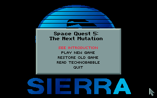
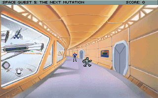

名稱：宇宙傳奇5：菜鳥船長 (Space Quest V: The Next Mutation，英文版)
簡介：Sierra 1993年出品的冒險解謎遊戲，台灣則由智冠代理進口，1994年收錄在「五合一
（Collector's Edition）」光碟裡，2006年收錄在「六合一（Collection）」光碟裡
[待補]。


備註：本版為1.04磁片版
保護：無
備註：合輯光碟版和1.04磁片版基本上是相同的。
備註：電腦速度不可太快，否則聲霸卡可能會初始化失敗。
檔案：sq5-0028.rar = 0.028磁片版（智冠版）